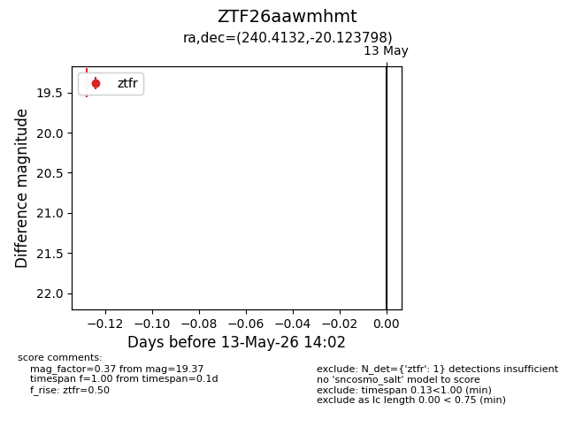
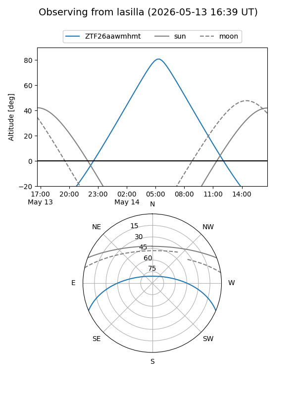
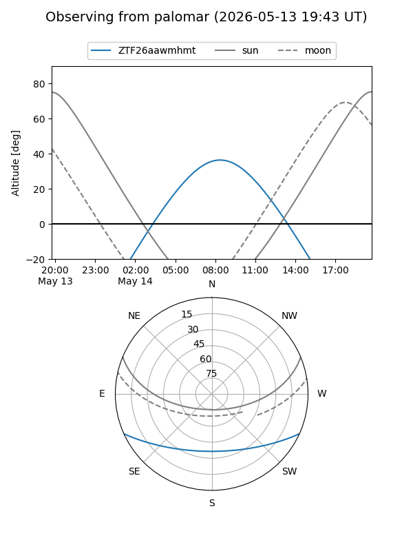

ZTF26aawmhmt
Target ZTF26aawmhmt at 2026-05-13 14:04
Aliases and brokers:
FINK: link
Lasair: link
ALeRCE: link
alt names
ZTF26aawmhmt (ztf,fink_ztf)
Coordinates:
equatorial (ra, dec) = 240.4132,-20.12380
equatorial (HMS+DMS) = 16:01:39.18,-20:07:25.67
galactic (l, b) = (352.2700,+24.02286)
Flags:
Photometry:
last ztfr=19.37
1 ztfr detections
Lightcurve

Visibility


Additional plots